The Queen’s Gambit
As a chess lover, you probably would have seen the famous TV series that came out October 2020, The Queen’s Gambit. But have you ever wondered how to actually play it? Just spare 15 minutes of your time, and boom, you’ll have learnt a new opening AND a trap(..wink..).
The Queen’s Gambit, as the name suggests, is opened by d4(the Queen’s pawn), after which black responds with d5 and white plays c4, so after the first 3 moves your board will look like this:
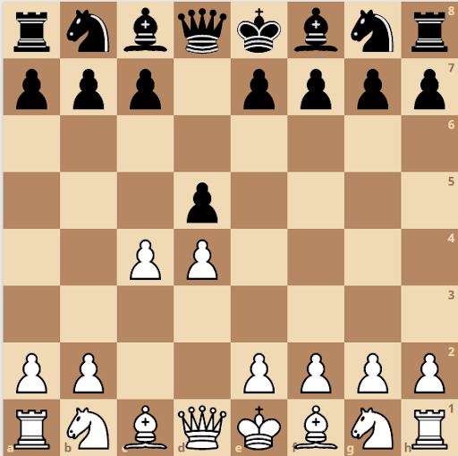
Here black has a choice to make, either to Accept the Queen’s Gambit or to Decline it. Let’s take a short look into each of these openings:
Queen’s Gambit Declined
If you’ve watched The Queen’s Gambit(TV series), you might recall that Beth Harmon played The Queen’s Gambit in the finale and Borgov(the opponent) declined it. Do you recall the move though?
After the first three move, Black can choose to decline the Queen’s Gambit by playing e6:
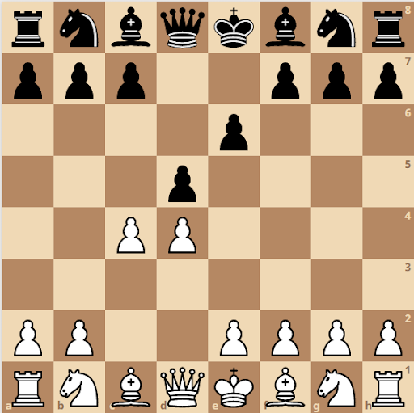
Here, white and black should just focus on developing the pieces to gain space and have good control on the board, taking out the knights and bishop. Important note: After developing the knights, quite often this position comes on the board:
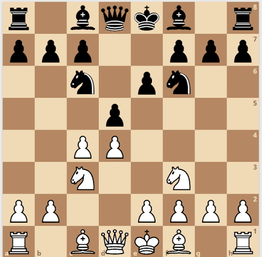
Here, a tempting move is to play e3 providing support to the d4 pawn. But after playing e3, white’s black-squared bishop will say, “Oh damn, I’m trapped by my own pawns. How will I get into the game?”. White will have to spend another couple of precious moves to bring the bishop out.
That is why, instead of playing e3 first, white should play Bg5 or Bf4, followed by e3.
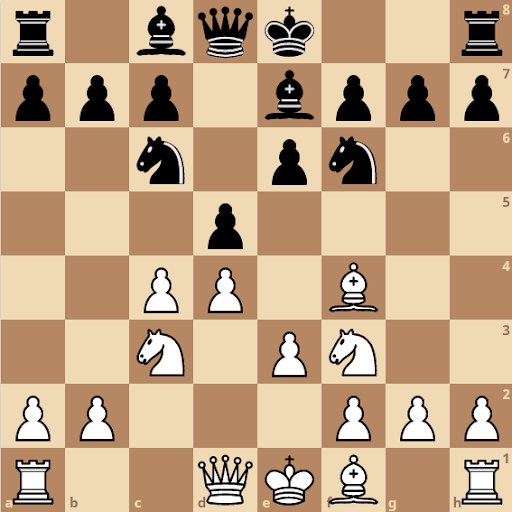
In this position, white’s pieces are well developed (and the black-squared bishop outside the pawn structure). This position is easier to play with white as you can play a wide variety of moves, while black is slightly struggling for space and centre control.
Queen’s Gambit Accepted
Let’s go back to black’s second move, if you recall the position was:
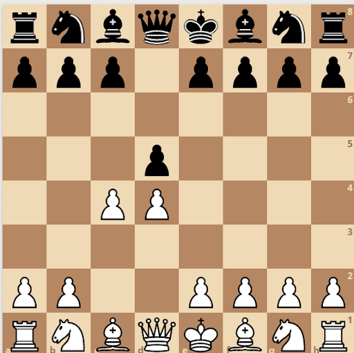
Here black will look at the board and say, “Hey, the c4 pawn is hanging! What a noob!” And plays dxc4. This position is known as the Queen’s Gambit Accepted.
White will then respond by playing e3, attacking the c4 pawn. Here comes the interesting part,(P.S.- And a trap):
If black does not know the theory very well, he will try to protect the c4 pawn by playing b5:
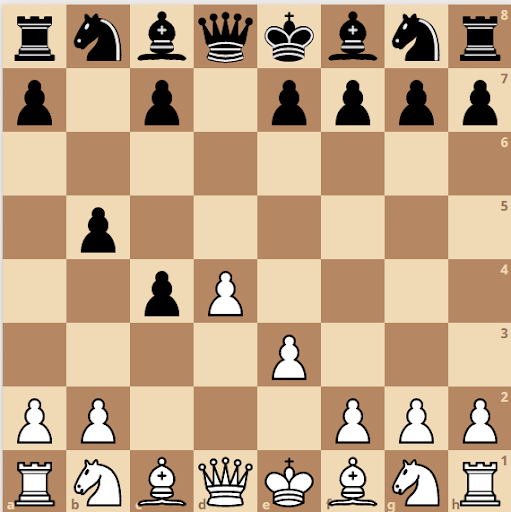
But white knows this opening very well, he chuckles and plays a4:
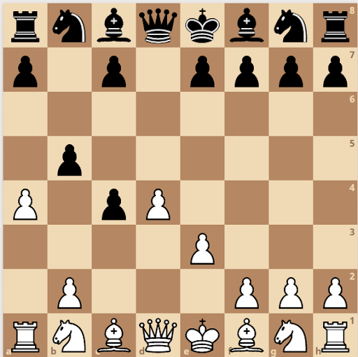
Now black gets into deep thought, he can’t play a6 to protect the pawn because after white plays axb5, he can’t play axb5 since his rook will hang. So he plays c6:
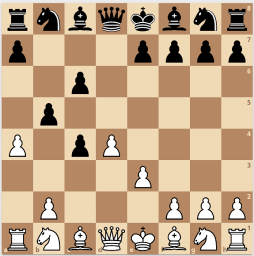
White laughs, he can’t believe yet another player falls for the trap, he plays axb5, black responds with cxb5:
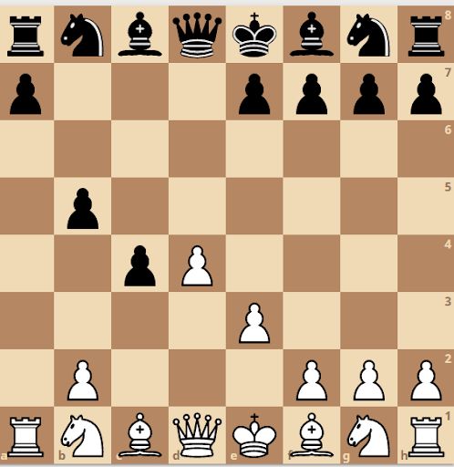
Now is the moment which white had been waiting for, can you spot the best move for white?
(Stop scrolling for a moment and think, here.)
White proudly plays Qf3:
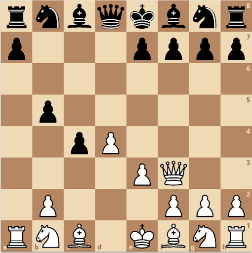
Black gasps, he is in trouble. “How did I not see this?”
After this, it is an easy win for white since he is a whole piece up. White goes home happily and black goes dejected but having learnt an important lesson: “Don’t mess with the Queen’s Gambit!”.
The next day, black challenges white to play a game. Similar moves follow and this position comes back again:
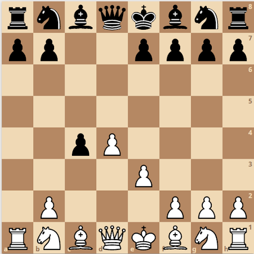
Black remembers from his previous match, not to try and save the c4 pawn. So he continues the development of other pieces and white after taking back the pawn on c4, develops his pieces too:
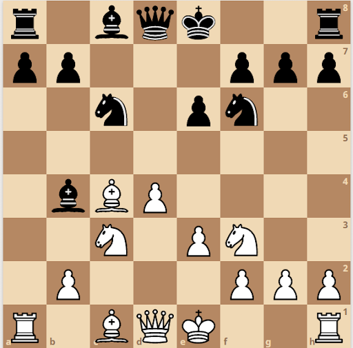
Yet again here, black does not have a centre pawn, white’s position is slightly better and after a good game, white wins and black goes home (yet again) dejected, remembering the lesson which he’s learnt the hard way: “Don’t mess with the Queen’s Gambit!”.
FootNote:
Just like the complementary King’s Gambit, playing the Queen’s Gambit makes it easier for black to develop an attack on white’s queen. So if white gets too greedy and is not careful enough, he might end up losing his queen. Above is an example of a game where white got greedy for a pawn and wasn’t careful enough to bring his queen back to safety in time. As you can see, in the end white’s queen was trapped.

So, keep this in mind while playing the Queen’s Gambit and you’re good to go. Have fun wrecking players with this opening.
And as a wise man once said: “Don’t mess with The Queen’s Gambit”!
Here’s some additional resources which you might like to refer if you’re interested in learning this opening in even more detail: